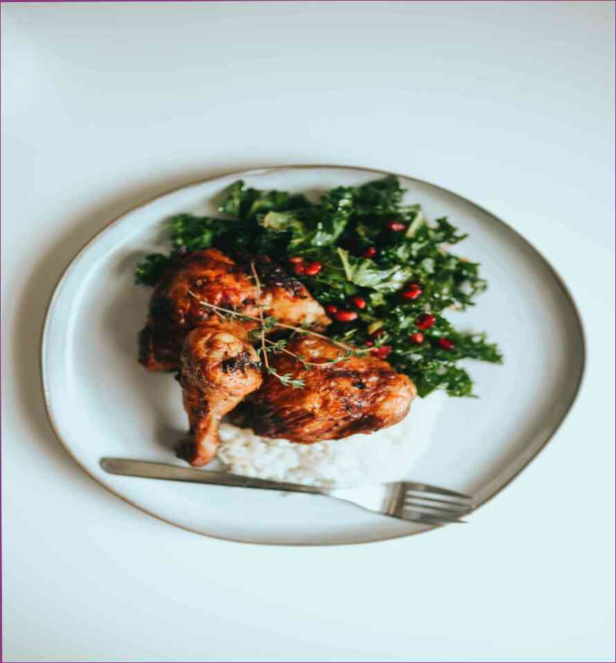

22.06.2021
Εδώ είναι 3 ποτά που είναι μεγάλη για την απώλεια βάρους και την αποτοξίνωση.Πράσινο τσάι με μούρα.Το πράσινο τσάι είναι μια καλή, αλλά όχι αρκετά καλό υποκατάστατο για την τακτική καφέ. Περιέχει καφεΐνη. Ωστόσο, το τσάι είναι πλούσιο σε αντιοξειδωτικά και είναι ένα από τα καλύτερα αποτοξινωτικά ποτά.Παρασκευάζεται με τον ίδιο τρόπο όπως και τακτική καφέ, με την προσθήκη μπαχαρικών και βοτάνων. Λένε ότι το τσάι είναι η καλύτερη θεραπεία ποτό στον κόσμο.. Παρασκευάζεται όπως το τσάι, με την προσθήκη κάποιων κανέλα και το κάρδαμο. Λένε ότι το κάρδαμο είναι το καλύτερο από τα καλύτερα για την υγεία μας. 4 ροφήματα για αποτοξίνωση. Παρασκευάζεται όπως το τσάι, με την προσθήκη κάποιων κανέλα. Είναι μεθυσμένος την ίδια στιγμή, όπως το τσάι. Βοηθά στην απολέπιση του ήπατος, αφαιρεί τις τοξίνες και να έχει μια θετική επίδραση σε ολόκληρο το σώμα.Αυτό το ποτό φτιάχνεται από τα φύλλα του Ginkgo biloba, ένα δέντρο που είναι εγγενές στην Ινδία. Είναι γνωστή για τις ισχυρές αντι-φλεγμονώδεις ιδιότητες.10 λόγοι για να αγαπήσετε το τζίντζερ.Sharp τσάι. Πολύ δυνατό τσάι που γίνεται από φύλλα και άνθη. Αυτό βοηθά να καθαρίσει το σώμα από τις τοξίνες και αποτοξινώνει το σώμα. Αυτό το ποτό είναι παρασκευάζεται με τον ίδιο τρόπο όπως ο καφές. Είναι μεθυσμένη τα μεσάνυχτα ή λίγο μετά τα μεσάνυχτα.Σόδα. Πολύ ισχυρή, δεν είναι αστείο, αλκοολούχα-tortilla-σαν ποτό με γλυκιά γεύση και μια παρατεταμένη γεύση. Είναι παρασκευασμένο, δεν σε αντίθεση με δυνατό καφέ, με την προσθήκη αλατιού και διάφορα πρόσθετα. Αυτό το ποτό είναι πολύ δημοφιλής στην Κολομβία και τη Νότια Αμερική. Το ποτό αυτό, επίσης, βοηθά στην απολέπιση του ήπατος και να δημιουργήσετε μια τονική ποτό.Γάλα. Πολύ υψηλή σε πρωτεΐνη, αλλά χαμηλή σε λιπαρά, το οποίο είναι πολύ σημαντικό για την υγεία. Το γάλα έχει αποτοξινωτική δράση. Αυτό γίνεται μέσω της δράσης των ενζύμων που βρέθηκαν στο στομάχι και τα έντερα.Επίσης, σε αυτό το ποτό: 1 κουταλάκι του γλυκού τριμμένο σπόρους λιναριού.Έδαφος σπόρους λιναριού βοηθούν στην απολέπιση του ήπατος και να δημιουργήσετε μια τονική ποτά * 1 κουταλάκι του γλυκού τριμμένο σπόρους λιναριού. Ομαλοποίηση της εντερικής μικροχλωρίδας και να βελτιώσει τη λειτουργία του πεπτικού συστήματος. Χρήση για αυτό, μην ξεπλύνετε.10 χρήσιμες ιδιότητες του φρέσκα σύκα. Ένα ποτήρι εικ χυμό. Αυτό το άρθρο είναι μόνο για ενημερωτικούς σκοπούς. Παρακαλούμε συμβουλευτείτε το γιατρό σας πριν χρησιμοποιήσετε αυτές τις πληροφορίες.Αν σας άρεσε το άρθρο μας, θα είμαστε ευτυχείς αν μπορείτε να το μοιραστείτε στα social media.